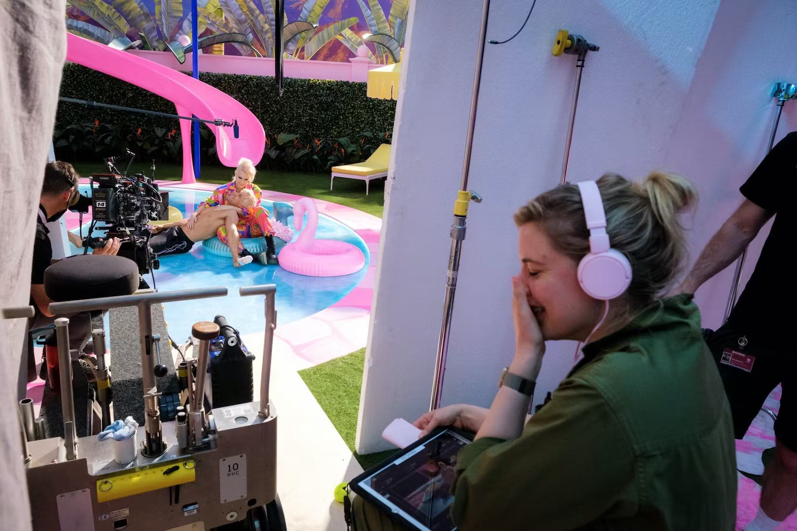

CULTURE
July 21, 2023
Greta Gerwig Brought Indie Spirit to Barbie
The filmmaker talks creating a Shakespearean Barbieland, subverting expectations, and using Mattel's massive IP to realize her dreams.
by Tori López
Barbies are cool again, thanks to Greta Gerwig's soulful and sneakily emotional Barbie, one of this summer’s biggest cinematic events alongside the atomic bomb movie; though the only one of its kind dressed in happy heaps of magenta. Or cool again is the wrong phrasing perhaps. Relatable for the first time feels closer to an accurate reading of this brilliant Barbie, starring an enchanting Margot Robbie as the stereotypical blonde (her fellow Barbies are portrayed by the likes of Issa Rae, Sharon Rooney, Kate McKinnon, Alexandra Shipp and Hari Nef, among others) and a hilarious Ryan Gosling, as Barbie’s generically beachy boy-toy Ken. After all, this is the first time in popular film when a wise writer gave the emptily pretty and unrealistically proportioned doll, once deemed antifeminist for making young girls feel bad about themselves, a grounded coming-of-age in the real world where women have flat feet and cellulite. And it certainly feels like the first time in a long time we’ve been made to reconsider all the ways that the Barbie doll, maybe—just maybe—wasn’t all that anti-woman.
Joining W over Zoom a few days before the theatrical opening of her latest film—which opened to the biggest box office of the year, Barbie director and co-writer Gerwig reflects on the emotions these toys stir: “I find that there's just such beautiful absurdity in the making of dolls, of inanimate objects. We're so scientifically advanced, we're talking to each other on machines. We're very knowledgeable about the world and the universe. And at the same time, we still make dolls and we still feel things about them, which feels truer [to who we are], but less advanced than we consider ourselves to be.” Below, Gerwig discusses her personal attachment to Barbies, her directing style, making personal films in any budget and how her love of Shakespeare guided Barbie.
During Barbie, I found myself thinking about a moment in Little Women when Jo has an emotional outburst: “Women: they have souls, and they have ambition, as well as beauty.” Did you think of these two films in close proximity? Yes, definitely. In some ways, all the movies I've co-written, written and directed are all talking to each other. It is almost a mystery to me when I'm in the middle of it. And then when I step back, I think, "Oh, you continue to be interested in women. This is something you're fascinated by." That ache of contradictions, of never being able to totally bridge that gap between adulthood and childhood, is present in this movie, too. It's this overflowing sense of joy, and then it's also, "I can never get back there." Well, I cried during that scene in Little Women. And I cried during America Ferrera's monologue about womanhood in Barbie. The latter took me by surprise. I noticed that my face was wet all of a sudden. Oh, that's so beautiful. In Little Women, [it just comes] from everything inside you, and from the book. But Barbie is a bit of a sneak attack.